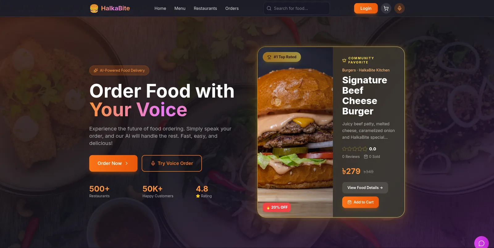
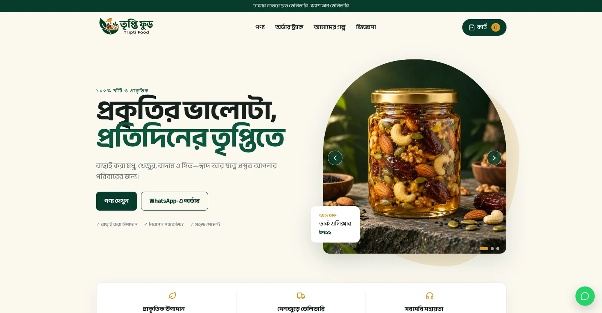

Full-stack development
Typed interfaces and APIs, backed by SQL or MongoDB.
- React
- Next.js
- TypeScript
- JavaScript
- Node.js
- NestJS
- Express
- FastAPI
- PostgreSQL
- MongoDB
- Redis
- Tailwind CSS
Full-stack developer and AI/ML engineer
I build backends for a multi-tenant retail ERP, and RAG systems that answer questions from documents.
Most of my work is TypeScript: React and Next.js on the front, NestJS or Express with PostgreSQL or MongoDB behind it. When a product needs AI, I switch to Python for retrieval pipelines and LLM agents.
I write the backend and the frontend, and I like being the person who knows how a feature works from the database table up to the button.
Most of my time goes into the backend: the database, the API, and whatever runs after a request has returned.
Outside client work I build AI projects, mostly retrieval pipelines and agent workflows with LangChain and LangGraph. The two topics I keep coming back to are Bengali NLP and making language models less likely to make things up.
Today that mostly means backend and platform work on a client’s live retail system.
2025 to present Current
A software agency. I work on client products.
TrustCart, a multi-tenant retail ERP
Client project, backend and platform engineering. December 2025 to present.
Stack: NestJS, TypeScript, PostgreSQL, Redis and Bull, Socket.IO, Next.js
What I reach for, grouped by the kind of work.
Typed interfaces and APIs, backed by SQL or MongoDB.
From scikit-learn baselines to deep learning for text and images.
LLM apps that cite their sources, and agents that call tools.
How the code gets shipped and kept running.
Food delivery platform, full-stack

A food delivery order involves four people who each need something different from it: the customer, the restaurant, the rider, and the admin who sets commissions.
A platform with a separate workspace for each of those roles. Customers browse, order, track, reorder, and review. Restaurants manage menus, payments, campaigns, and business hours, and see revenue and review analytics. Riders handle assigned deliveries and their earnings. Order and chat updates arrive over server-sent events, so the React client never polls. Food suggestions come from Gemini, but only from dishes that already exist in MongoDB.
Stack: React 19, TypeScript, Redux Toolkit and RTK Query, Tailwind CSS, Express 5, MongoDB, JWT, server-sent events, Leaflet, Gemini
The source code is private. I can walk you through it on request.
Bangla online store, full-stack

A small shop selling honey, dates, nuts and seeds needed a site in Bengali that works on a phone, takes the payment methods people here actually use, and doesn’t trust the price the browser sends.
A mobile-first storefront in React and TypeScript, with an Express and MongoDB API behind it. Customers can pay cash on delivery, with bKash or Nagad, or fall back to ordering on WhatsApp. When an order comes in, the server recalculates prices, the delivery fee, and stock instead of using what the cart says.
Nobody needs an account to follow an order. You enter the order number and the phone number you ordered with, and you see its status, the courier’s tracking ID if there is one, and a button to order the same items again. Reviews open only after an order is marked delivered, and the shop owner moderates them.
The admin side handles products (with images uploaded to Cloudinary), store settings, and order status. Admin passwords are stored only as bcrypt hashes, and the API runs behind Helmet, strict CORS, and rate limits.
Stack: React, TypeScript, Vite, Express, MongoDB, JWT, bcrypt, Cloudinary, Helmet
The source code is private. I can walk you through it on request.
I care most about language models that have to be right, and about how well they work in Bengali.
Bengali has far less data to train on than English, and its dialects vary a lot.
Reliability first. I want answers that stay grounded in their sources, and a way to catch a model when it makes something up. My Kaggle work on Bengali hallucination detection is below.
Hybrid and adaptive retrieval, reranking, and grounding. Also the harder part: evaluating the whole pipeline.
Where LLM and agent systems break under adversarial input, and defenses cheap enough to actually ship.
Bengali health-advisory RAG with a hallucination-safety layer
Bengali public-health answers grounded in curated sources, with citations and a verification step after generation.
AdaptiveRAG-Agent
Letting an LLM decide when and how to retrieve, which tools to call, and where to route a query, to see whether that beats a fixed RAG pipeline.
Bengali Hallucination Detection
Scored 0.803 with an ensemble of fine-tuned BanglaBERT-large, Qwen3-14B as an LLM judge, dense retrieval, and LightGBM stacking on top.
bKash / NSUCEC Datathon
A churn-prediction pipeline over more than 75 million transaction rows, using Dask, LightGBM, XGBoost, CatBoost, and Optuna.
Vehicle Detection on Bangladeshi CCTV
YOLO11 detectors for 13 vehicle classes, many of them tiny and badly imbalanced.
Expected 2027 In progress
Shahjalal University of Science and Technology (SUST), Sylhet
Thesis: a Bengali health-advisory RAG system (details under Research).
Contact
I’m open to full-stack and backend roles, freelance web work, AI/ML engineering, and research collaboration. Remote is fine, and so is on-site.